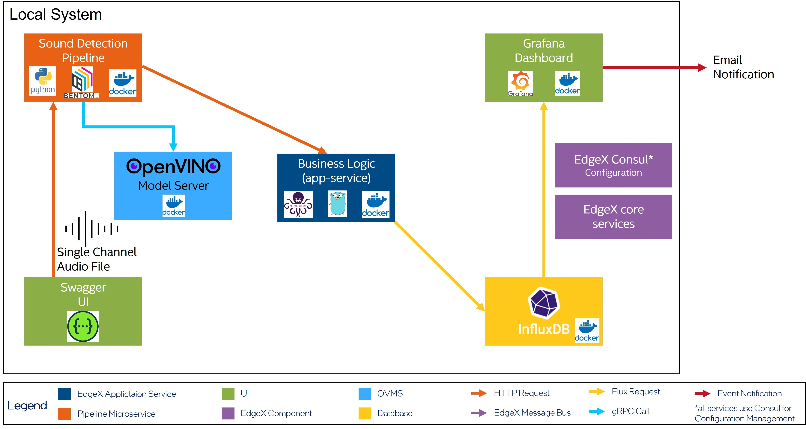
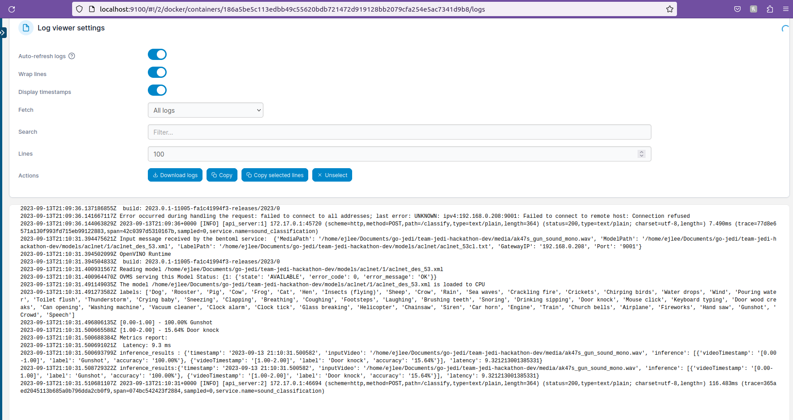

Team Jedi Hackathon¶
Overview¶
This project allows developers to send a single channel sound file to a sound detection pipeline connected to business logic. The business logic parses the inference results as data that is exported to InfluxDB, a time-series database. This time-series data can then be viewed on a Grafana dashboard and customized to send email notifications.
- Programming Languages: Python, Golang
- Technologies used : Docker, Docker Compose, Make, Conda, BentoML, Grafana, InfluxDB
- Intel OpenSource Technologies used: OpenVino, OpenVino Model Server (OVMS), EdgeX
Target System Requirements¶
- Disk Space needed
Dependencies:¶
- Docker v24.0.0
- Docker Compose v2.17.3
- Golang v1.20
- Conda Environment with Python v3.8
- Sample Audio File - must be single channel and
.wavformat
Microservice descriptions:¶
BentoML Sound Detection Pipeline¶
TODO: Fill me in
Business Logic Application Service¶
TODO: Fill me in
Data Export Application Service¶
This is a golang-based EdgeX example that provides the ability to export data from the EdgeX Stack. The example allows EdgeX Events and Reading to be sent to InfluxDB using line protocol. This project utilizes the exporter to take data sent via MQTT on a specified topic and export it to InfluxDB using the MQTT Sender, a topic specific to InfluxDB and Telegraf.
How It Works¶

Figure 1: Architecture Diagram
In this project, a single-channel, wav-format sound file is sent over REST from the Swagger UI to the BentoML Sound Detection Pipeline container. This container then calls OpenVino Model Server (OVMS) Docker container over gRPC to get the model status. The Sound Detection Pipeline container will then run the Python inferencing and send the inference results over REST to the business logic application service. The business logic container is then responsible for parsing the inference results and sending it via MQTT to the data export service. The Data Export service takes the MQTT results and sends them over MQTT to InfluxDB. InfluxDB is responsible for storing the time-series data that is then visualized in a Grafana dashboard. The Grafana dashboard is configured for viewing inference results and sending email notifications.
Get Started¶
Provide step-by-step instructions for getting started.
- Install the listed dependencies.
-
Configure
DOCKER_INFLUXDB_INIT_PASSWORDandDOCKER_INFLUXDB_INIT_ADMIN_TOKENin the.envfile for InfluxDB. -
Build the business logic container.
cd app-sample-service make docker cd .. -
Build the data export container.
cd app-sample-service make docker cd .. -
Create a Conda working environment, configure it, and activate.
conda create -n hackathon_env python=3.8 conda activate hackathon_env cd pipelines/sound_classification_demo pip install -r requirements.txt cd ../..Note
Use
conda listto verify all packages in requirements.txt are installed. -
Build the BentoML sound detection pipeline service
cd pipelines/sound_classification_demo make buildNote
To build and run the docker image, the build tag from the
make buildcommand is required.The following is the expected output from the build command:

Figure 2: BentoML Build Output
-
[Optional] Build the BentoML Docker Image from the
pipelines/sound_classification_demodirectory.make docker-build BENTO_TAG=<bento_image_name>:<bento_image_tag>Note
In the example above, the
BENTO_TAGwould beBENTO_TAG=sound_classification:r5lystssnwbweb5w.
Run the Application¶
- Run the stack of services from the project root directory.
[Optional] Run Portainer for container management.
make run
make run-portainer -
Start the BentoML service from the
pipelines/sound_classification_demodirectory.Run Method Run Command Locally make serveDocker make docker-run BENTO_TAG=<bento_image_name>:<bento_image_tag> PROJECT_REPO_PATH=<project_repo_path>Note
In the example from setup, the
BENTO_TAGwould beBENTO_TAG=sound_classification:r5lystssnwbweb5w. ThePROJECT_REPO_PATHis the full path to theteam-jedi-hackathon-devproject. -
Open the Swagger API UI.
-
Test a POST request to the
/classifyAPI by providing the input text as{ "MediaPath": "[PATH]/team-jedi-hackathon-dev/media/ak47s_gun_sound_mono.wav", "ModelPath": "[PATH]/team-jedi-hackathon-dev/models/aclnet/1/aclnet_des_53.xml", "LabelPath": "[PATH]/team-jedi-hackathon-dev/models/aclnet/aclnet_53cl.txt", "GatewayIP":"XXX.XXX.X.X", "Port":"9001" }Success
If the pipeline runs successfully, the Response Code will be 200 and the Response Body will look like
Success, inference_results: {'timestamp': '2023-09-13 21:10:31.500582', 'inputVideo': '/home/ejlee/Documents/go-jedi/team-jedi-hackathon-dev/media/ak47s_gun_sound_mono.wav', 'inference': [{'videoTimestamp': '[0.00-1.00]', 'label': 'Gunshot', 'accuracy': '100.00%'}, {'videoTimestamp': '[1.00-2.00]', 'label': 'Door knock', 'accuracy': '15.64%'}], 'latency': 9.321213001385331}- To further verify the pipeline ran successfully, check the logs of the BentoML Pipeline container. The example below shows the logs from Portainer
 Figure 3: Portainer container log screenshot
- Open the Grafana Dashboard to see the visualization of the inference results.
API Documentation¶
If your microservices expose APIs, document each API endpoint, including its purpose, input parameters, expected output, and any authentication/authorization requirements. Provide sample API requests and responses for clarity.
Testing¶
Discuss the testing approach you followed for your microservices. Document unit tests, integration tests, and any other types of tests performed. Include instructions on how to run the tests.
Summary and Next Steps¶
Note: Provide 2-3 line description of what the user has successfully done and where they should go to as the next step.
Troubleshooting¶
Include a section addressing common issues, error handling, and troubleshooting tips.